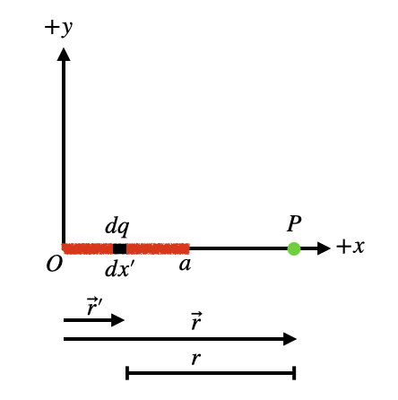
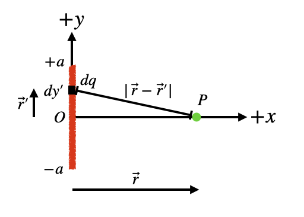

C1.3 Examples#
C1.3.1 Line Charge - Case 1#
We consider a line charge with charge \(Q\) and length \(a\) along the x-axis. The task is to find the \(E\)-field at some point along the x-axis outside the charge distribution.
Step 1
Make a sketch.
Step 2
This is a 1D line charge, so the infinitesimal charge in terms of the density is
We are given the net charge and the length of the line distribution, so the density is \(\lambda = \frac{Q}{a}\), and the infinitesimal charge is
Step 3
The position vector of the charge is (using 3D Cartesian coordinates):
All the infinitesimal charges have no \(y\) and \(z\) components, and we have
Similarly, the point P has position vector
Step 4
The distance between the two is
Step 5
The electric field from the infinitesimal charge is:
Insert the information into the equation for the electric field:
We can factor out the unit vector:
Then we divide out the \((x - x')\) factor:
Now we are ready to integrate.
Step 6
We integrate to obtain the full electric field:
Let us bring all the constants outside the integral, including the unit vector. The cartesian unit vector is a constant and this step is really important to think about if we are in polar or cylindrical coordinates, where the unit vectors may vary in direction.
The integral can be integrated relatively straightforward by making a substitution \(u = (x - x')\). The differential is \(du = -dx'\) and we have
Using the Power Rule for integration:
Inserting the expression for u back into the solution:
and evaluate at the limits:
In an attempt to simplify, we can use common denominator:
which simplifies to
Step 7
Several items to reflect on here.
There are no \(y\) and \(z\) components of the electric field. This makes sense due to the geometry of the problem.
if the point P is far from the line charge, that is, \(x >> a\), then we have
Since \(\frac{a}{x}\) will become very small, it reduces to
That is, far away from the line charge it behaves as a point charge.
C1.3.2 Line Charge - Case 2#
We consider a line charge with charge \(Q\) and length \(2a\) along the y-axis. The task is to find the \(E\)-field at some point along the x-axis outside the charge distribution.
Step 1
Make a sketch.
Step 2
This is a 1D line charge, so the infinitesimal charge in terms of the density is
We are given the net charge and the length of the line distribution, so the density is \(\lambda = \frac{Q}{2a}\), and the infinitesimal charge is
Step 3
The position vector of the charge is (using 3D Cartesian coordinates):
All the infinitesimal charges have no \(x\) and \(z\) components, and we have
Similarly, the point P has position vector
Step 4
The distance between the two is
Step 5
The electric field from the infinitesimal charge is:
Insert the information into the equation for the electric field:
We can see that there are two components of the electric field contributed by the infinitesimal charge. Breaking into the components, we have
These two components can be integrated independently.
Step 6
We integrate the two components to obtain the full electric field. In this process, we do pay attention to the fact that the unit vectors do not change and that allows us to integrate the components.
x-component#
We can bring the constants outside the integral. Notice that \(x\) is a constant for this integration.
This integral is a little gnarly and requires a trigonometric substitution: \(y' = x\tan\theta \). If you look up the integral in a table or use computer to solve it, the result is
or simplified:
y-component#
In this case, we are integrating an odd function over a symmetric interval and the result is zero
We could also have recognized that through the symmetry of the problem. Each infinitesimal charge above the x-axis will contribute a negative E-component while charges below will contribute a positive E-component, thus adding up to zero.
Result#
The electric field at P along the x-axis is
Step 8
Several items to reflect on here.
There are no \(y\) and \(z\) components of the electric field. This makes sense due to the geometry of the problem.
If the point P is far from the line charge, that is, \(x >> a\), then we have
Since \(\frac{a}{x}\) will become very small, it reduces to
That is, far away from the line charge it behaves as a point charge.
If the point P is close to the line charge, that is, \(x << a\), then we have
Since \(\frac{a}{x}\) will become very small, it reduces to
If we insert the charge density \(\lambda = Q/(2a)\) then we have